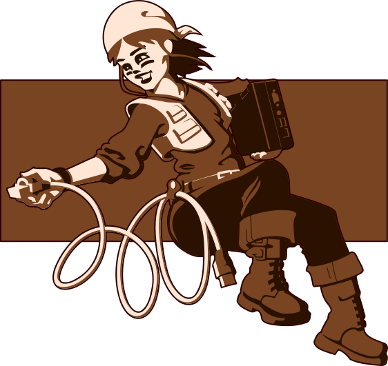

ion-icon { font-size: 64px; color: blue; } 
.bi::before { display: inline-block; content: ""; background-image: url("data:image/svg+xml,
"); background-repeat: no-repeat; background-size: 1rem 1rem; }

 .bi::before {
display: inline-block;
content: "";
background-image: url("data:image/svg+xml,");
background-repeat: no-repeat;
background-size: 1rem 1rem;
}
.bi::before {
display: inline-block;
content: "";
background-image: url("data:image/svg+xml,");
background-repeat: no-repeat;
background-size: 1rem 1rem;
}